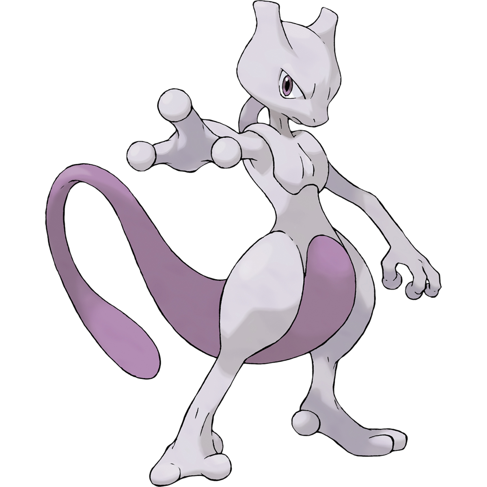
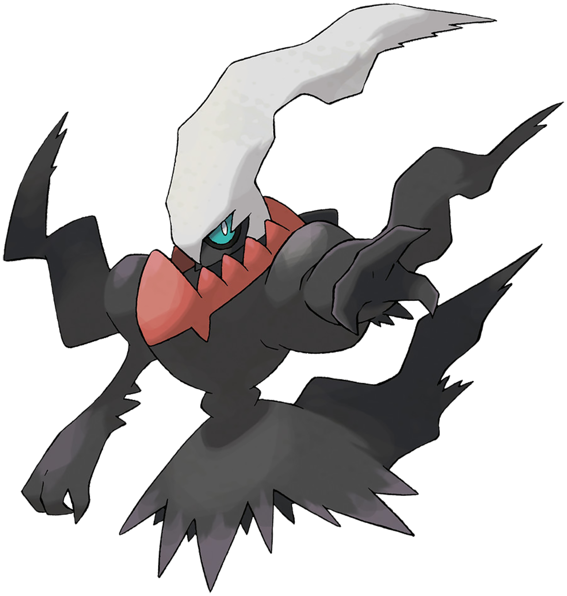
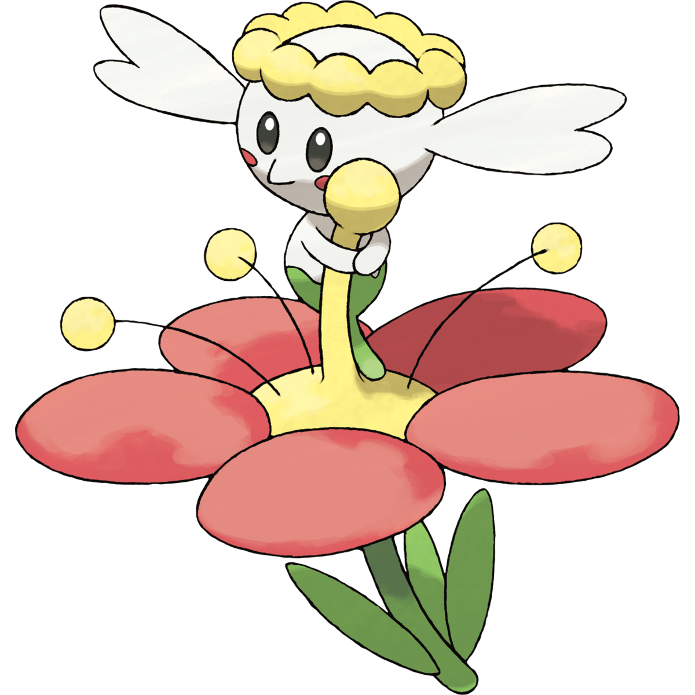
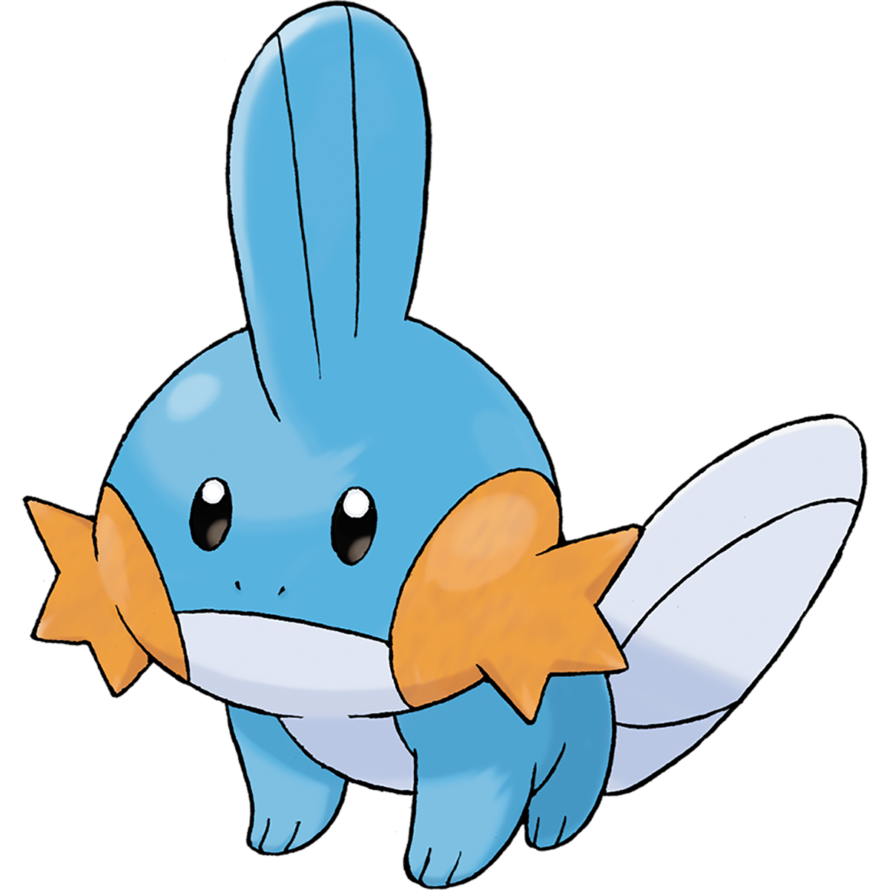
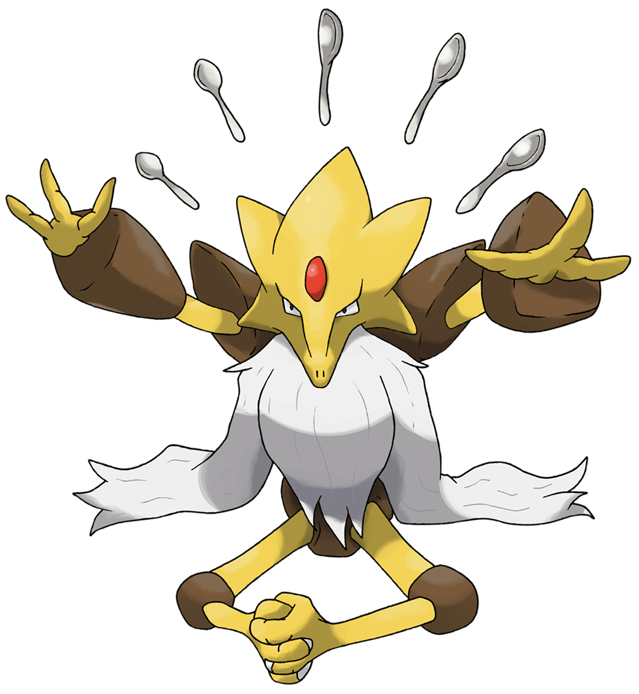
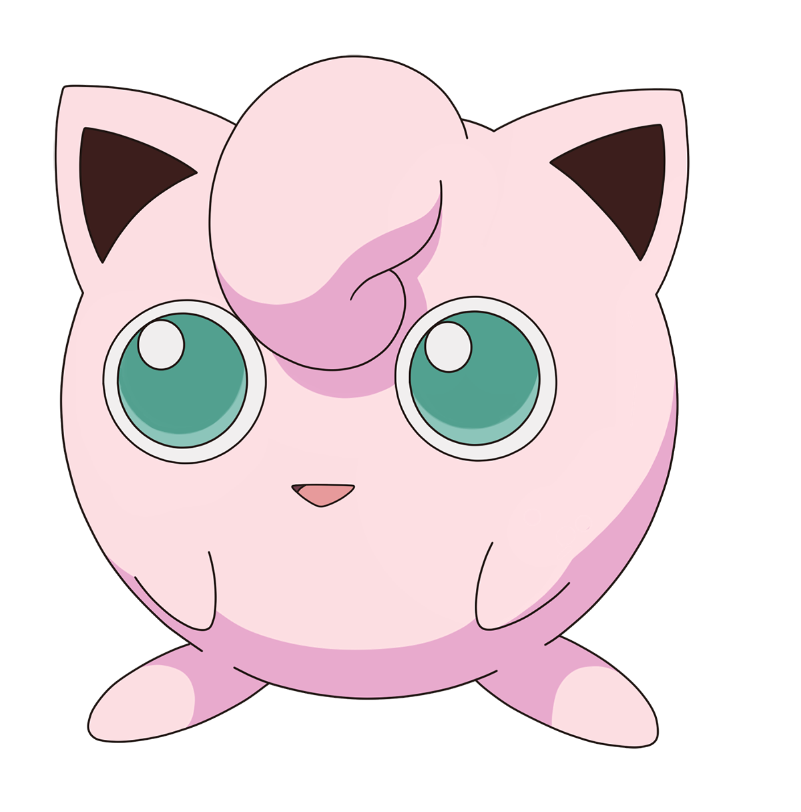
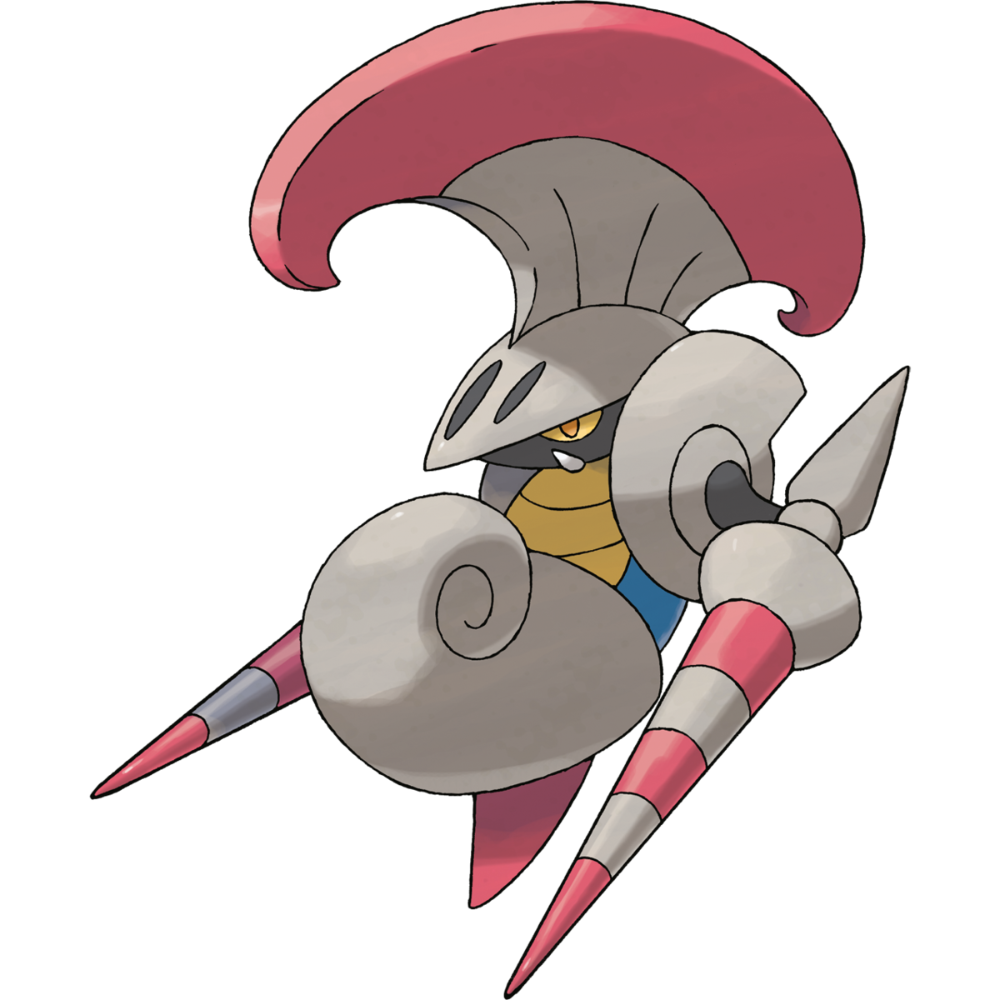
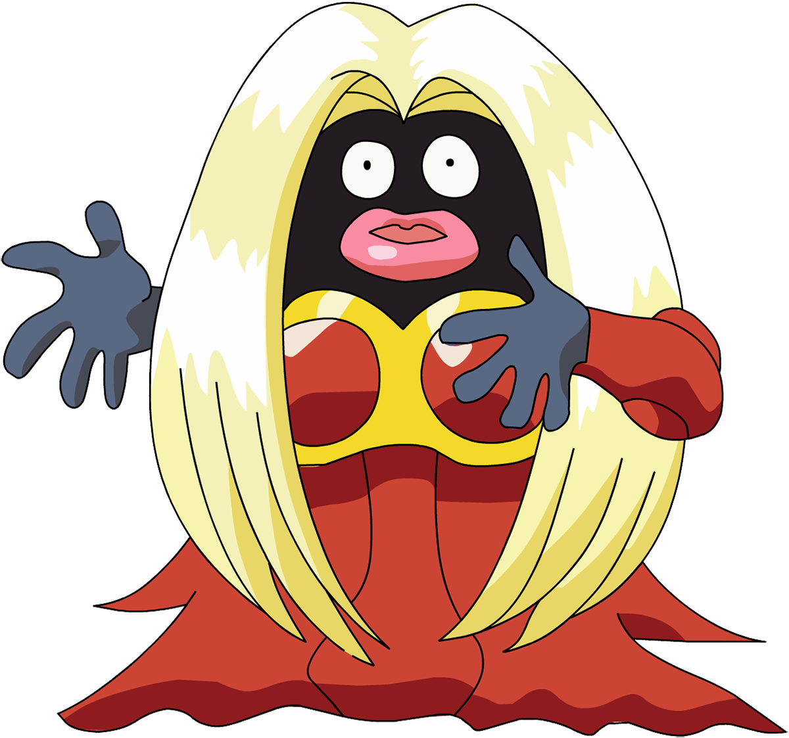
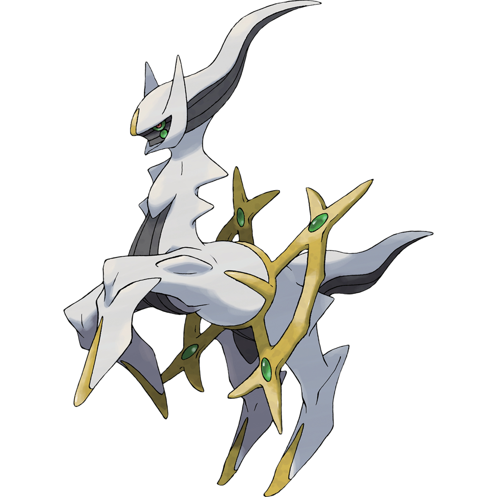

Amateur Poems with Pokemon
Slavery

slavery is a state of being
present in the past, current, and future
an eternal chain wrapped around our culture
from the ships to the media
slavery is always changing form
whips cracking through the air
to the absence of a phone leaving us bare
physical scars transition to mental
the damage eventually settling as spiritual
generations removed and still scarred
slavery is said to tear us apart
but today slavery brings us together
today slavery tells us the weather
modern slavery tells you what’s better
in hopes that you follow the shepherd
slavery isn’t forced upon us anymore
slavery is a choice agreed upon by the horde
slavery isn’t oppression
slavery is accepted impression
Darkness

darkness is said to be the absence of light
a state of being ruled by fright
the lack of fire that fuels fright
darkness is a chilling embrace
a runner always at the front of the race
a creature with more than one face
the stalker in the night that makes you brace
but only lingers briefly for a small taste
darkness is one half of the puzzle
with the other half being its muzzle
a dam to stop the roaring water
the soldier that holds the border
light is the companion of darkness
split in two inside our conscious
yet always melding together
both are powers we harness
to make choices in stormy weather
Flowers

flowers are depicted as art
things to appreciate without knowledge
only known to bloom and wilt
and when they do, with a tilt
but nothing more than the surface
on which they grow on
sometimes at the edge of a pond
flowers are heralds of change
at the end of a period of doom
the sign of peace is a flower’s bloom
the warrior that slays the beast
known as gloom
an embodiment of the rainbow
flowers often symbolize one’s hope
a friend that consoles you
and makes you forget about the rope
flowers grow just like humans do
a flower is present in me and you
it’s our choice to nurture it
and plant the seeds before we wilt
Rain

rain is the pretext
to the promise from god
a signal of new times
one without destruction
a fuel for construction
one drop at a time
the sound a backdrop
through the annals of history
powering germination
and leading to civilization
a slow but steady tide
continuously flowing from the sky
a reminder of mankind’s pride
and that there is nowhere to hide
Pause

a stop in life is always seen as a negative
perceived as stagnation
a road block to one’s destination
but a day for rest was cast down
a pause in life
a brief reprieve from the constant strife
time dedicated to treat the body how it should
not to continue working the hood
brandishing words in the shape of a knife
leaving tracks the shape of a paw
ravenous hunger taking the shape of a maw
a simple pause would be nice
and relieve us of our vice
Love

love is a force of nature
one that powers every creature
it’s present in our every feature
like the steam that powered trains
love is like the fuel for our brain
love is also responsible for pain
leaving you to wonder in the rain
the lack of it makes you empty
a husky of what you once were
like old machinery in a junk yard
love can tear you apart
but build you once more
love is a revolving door
Armor

armor is like a shell
often physical, but spiritual as well
protecting from the influences of hell
denizens ill when you’re well
armor was made for a purpose
to shield the body during battle
but not the mind after
foes lingering in the minds’ rafters
tormenting the psyche eternally
Beauty

beauty is ethereal, intangible
present every day but not touchable
we search for beauty and often find it
just to realize that we end up craving more
the hunger like a ravenous horde
beauty is frightening
present then gone like lightning
one day you have it
and the next it’s absent
Light

light is perceived as a beam
a herald that unravels a sinister scheme
minister of truth under a hopeful roof
but also a beacon during times of stress
the deacon that wakes you from your rest
it shines on everyone, you and me
but not everyone bathes in its sea
many crave the touch but fall short
and as a retort
they deny light and its providence
allowing darkness to seep within their countenance